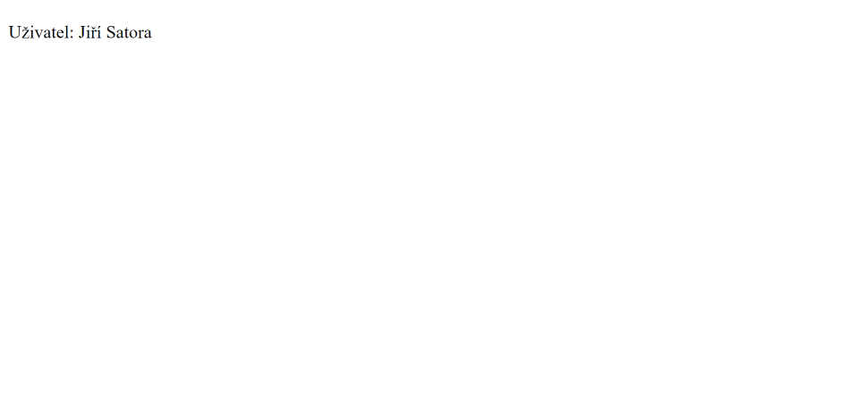

JSP expression language
V této části se naučíme o expression language (EL). Ta zjednodušuje přístup k datům uložených v Java bean komponentách a ostatních objektech jako je request, session, application a tak podobně.
Syntaxe pro expression language je následující:
${ expression }Expression language obsahuje spoustu implicitních objektů, operátorů a rezervovaných slov. Potom je v této části uvidíte popsané v tabulkách.
Ukázka použití expression language
Pro ukázku si ukážeme použití expression language pro vypsání hodnot java beanu. Založíme si nový projekt a vytvoříme bean třídu Uzivatel (v nějakém Java balíčku, abychom ji mohli použít v JSP). Kód pro ni ukazuje následující ukázka.
- src
- main
- java
- resources
- webapp
- test
- java
- resources
- main
- target
<project xmlns="http://maven.apache.org/POM/4.0.0" xmlns:xsi="http://www.w3.org/2001/XMLSchema-instance" xsi:schemaLocation="http://maven.apache.org/POM/4.0.0 https://maven.apache.org/xsd/maven-4.0.0.xsd">
<modelVersion>4.0.0</modelVersion>
<groupId>io.github.jirkasa</groupId>
<artifactId>expression-language</artifactId>
<version>0.0.1-SNAPSHOT</version>
<packaging>war</packaging>
<name>expression-language</name>
<properties>
<project.build.sourceEncoding>UTF-8</project.build.sourceEncoding>
<project.reporting.outputEncoding>UTF-8</project.reporting.outputEncoding>
<java.version>17</java.version>
<maven.compiler.source>${java.version}</maven.compiler.source>
<maven.compiler.target>${java.version}</maven.compiler.target>
</properties>
<dependencies>
<dependency>
<groupId>javax.servlet</groupId>
<artifactId>javax.servlet-api</artifactId>
<version>4.0.1</version>
<scope>provided</scope>
</dependency>
</dependencies>
</project>package io.github.jirkasa;
import java.io.Serializable;
public class Uzivatel implements Serializable {
private String jmeno;
private String prijmeni;
public void setJmeno(String jmeno) {
this.jmeno = jmeno;
}
public String getJmeno() {
return jmeno;
}
public void setPrijmeni(String prijmeni) {
this.prijmeni = prijmeni;
}
public String getPrijmeni() {
return prijmeni;
}
}Teď můžeme vytvořit JSP stránku, kterou můžeme pojmenovat třeba jako "stranka.jsp". Na této stránce si vytvoříme bean objekt a pomocí expression language poté vypíšeme jeho hodnoty.
- src/main/webapp
<%@page contentType="text/html" pageEncoding="UTF-8" %>
<!-- vytvoření bean objektu -->
<jsp:useBean id="uzivatel" class="io.github.jirkasa.Uzivatel" />
<jsp:setProperty name="uzivatel" property="jmeno" value="Jiří" />
<jsp:setProperty name="uzivatel" property="prijmeni" value="Satora" />
<!DOCTYPE html>
<html>
<head>
<meta charset="UTF-8">
<title>Expression Language</title>
</head>
<body>
<!-- vypsání vlastností bean objektu pomocí expression language -->
<p>Uživatel: ${uzivatel.jmeno} ${uzivatel.prijmeni}</p>
</body>
</html>Po spuštění aplikace a navštívení http://localhost:8080/expression-language/stranka.jsp byste měli vidět stránku, kterou ukazuje následující obrázek.
Implicitní objekty v expression language
Pro expression language existuje několik implicitních objektů. Následující tabulka je popisuje.
| Objekt | Popis |
|---|---|
| pageScope | obsahuje atributy pro page rozsah |
| requestScope | obsahuje atributy pro request rozsah |
| sessionScope | obsahuje atributy pro session rozsah |
| applicationScope | obsahuje atributy pro application rozsah |
| param | obsahuje request parametry |
| paramValues | obsahuje request parametry jako pole hodnot |
| header | obsahuje hodnoty headerů |
| headerValues | obsahuje pole hodnot headerů |
| cookie | obsahuje cookies |
| initParam | obsahuje inicializační parametry |
| pageContext | poskytuje přístup k různým objektům jako je request, session, atd... |
Následující řádek kódu například vypisuje na stránku parametr "jmeno", poslaný v requestu.
${ param.jmeno }Rezervovaná slova
Expression language obsahuje různá rezervovaná slova. Hodně z nich jsou aliasy pro operátory, které známe z Javy. Následující tabulka je popisuje.
| Slovo | Popis |
|---|---|
| lt | Alias pro operátor "<". |
| le | Alias pro operátor "<=". |
| gt | Alias pro operátor ">". |
| ge | Alias pro operátor ">=". |
| eq | Alias pro operátor "==". |
| ne | Alias pro operátor "!=". |
| and | Alias pro operátor "&&". |
| or | Alias pro operátor "||". |
| not | Alias pro negaci ("!"). |
| div | Alias pro operátor "/". |
| mod | Alias pro operátor "%". |
| empty | Zjišťuje zda je hodnota null nebo prázdná. |
| instanceof | Zjišťuje zda je objekt instancí nějaké třídy. |
| true | Boolean hodnota true (stejně jako v Javě). |
| false | Boolean hodnota false (stejně jako v Javě). |
| null | Hodnota null (stejně jako v Javě). |
To je pro tuto část vše. Expression language není žádná složitá věc. Hodně věcí nám usnadňuje.